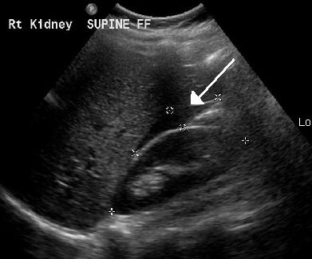

Hypocondre droit : espace de Morison

12345D
Pas de bande noire entre le foie et le rein.
Fin liseré anéchogène. Le cliché source montre ce type de liseré.
Collection large. L'image ne distingue pas le sang de l'ascite.
- 1 Paroi abdominale
- 2 Foie
- 3 Rein droit
- 4 Diaphragme
- 5 Espace de Morison
- 1 Paroi abdominale
- 2 Foie
- 3 Rein droit
- 4 Diaphragme
- 5 Liseré liquidien
- 1 Paroi abdominale
- 2 Foie
- 3 Rein droit
- 4 Diaphragme
- 5 Épanchement abondant
Pourquoi une bande noire entre le foie et le rein n'est pas toujours du sang ?
L'espace de Morison est le récessus hépato-rénal. Vide, il ne sépare pas le foie du rein par une bande anéchogène. Une bande noire, déclive, qui s'ouvre quand le patient est en décubitus, est un liquide libre.
Le sang frais est souvent anéchogène au début : l'image ne dit pas s'il s'agit d'ascite, de bile, d'urine ou de sang. Le contexte (trauma, cirrhose, hypotension) et la ponction tranchent. Les cloisons et le plancton orientent vers un liquide riche, pas vers un transsudat simple.
Le cliché source (James Heilman, 2014 sur Wikimedia) montre un fin liseré au pôle supérieur du rein droit. Le schéma n'est pas un calque de ces pixels : la superposition sert seulement à comparer l'emplacement.
Schéma pédagogique. Cliché source : James Heilman, MD, FluidMorisonsPouchEctop, Wikimedia Commons, CC BY-SA 3.0, consulté le 31 octobre 2026. Le niveau « liseré » peut superposer ce cliché ; ce n'est pas une segmentation. Repère D à gauche de l'écran. Police Atkinson Hyperlegible, SIL OFL.